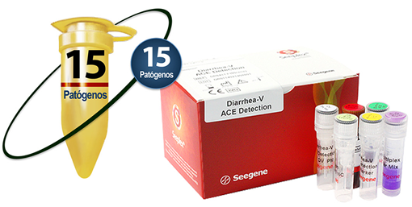
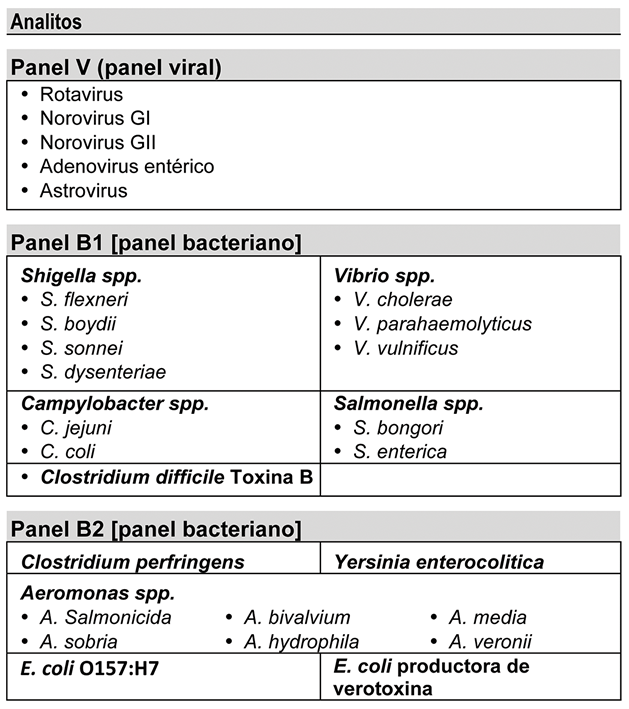

SEEPLEX® DIARRHEA ACE DETECTION

INDICACIÓN DE USO:
La prueba Seeplex® Diarrhea ACE Detection, detecta virus o bacterias causantes de diarrea directamente de las heces y del hisopado rectal.
Muestras:
• Hisopado rectal.
• Heces.
CARACTERÍSTICAS:
• Detección simultánea de 4 virus y/o 10 bacterias causantes de diarrea.
• Sistema multiplex de PCR basado en la tecnología DPO™
• Sistema para la interpretación de resultados.
• Sistema para prevención de contaminación.

INFORMACIÓN DE PEDIDO:
|
Nombre del producto |
Catálogo No. |
Presentación |
|
Seeplex® Diarrhea-V ACE Detection |
DR6411Y |
50 rxns |
|
Seeplex® Diarrhea-B1 ACE Detection |
DR6501Y |
50 rxns |
|
Seeplex® Diarrhea-B2 ACE Detection |
DR6502Y |
50 rxns |
PUBLICIDAD DIRIGIDA A
PROFESIONALES DE LA SALUD
Registro Sanitario No.: 1788R2016 SSA
Aviso de Publicidad No.: 173300202C2482
DATOS COMPLEMENTARIOS: Para mayor información comunicarse a:
amplibio-seegene diagnostics, S.A.p.i. DE C.V.
Teléfonos: (55) 5035-9808, 5377-1609,
5377-1615, 5377-1612
www.asdx.mx